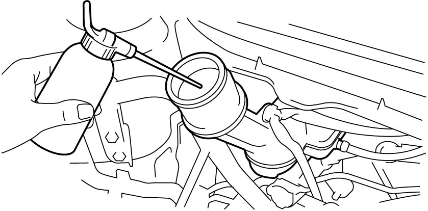
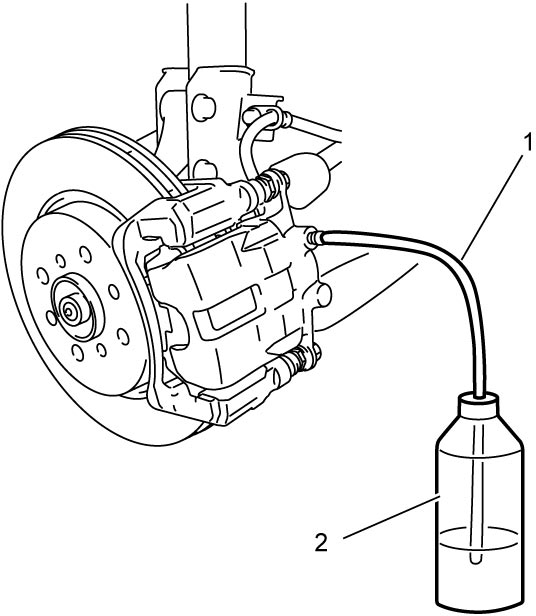

4A
| Brake Fluid Replacement |
NOTICE:
•Using improper or contaminated brake fluid can cause brake system failure. Using shock absorber fluid or any other fluid that contains mineral oil for the brake fluid will cause the rubber parts in the brake hydraulic system to swell or distort. If water is mixed in the brake fluid, the boiling point will be lowered.
—Use only the specified brake fluid from a sealed container.
—Do not use a container that has been used for a mineral oil or is wet with water for refilling the brake system.
—Keep all fluid containers capped to prevent contamination and entry of moisture.
•Brake fluid is extremely damaging to painted surfaces. If brake fluid contacts painted surfaces, immediately wipe it off and flush the surfaces with water thoroughly.—Do not use a container that has been used for a mineral oil or is wet with water for refilling the brake system.
—Keep all fluid containers capped to prevent contamination and entry of moisture.
NOTE:
•When replacing brake fluid, start with the brake closest to the brake master cylinder.
•To prevent air from getting into reservoir, be careful not to let the reservoir be short of fluid while operating brake pedal.
•To prevent air from getting into reservoir, be careful not to let the reservoir be short of fluid while operating brake pedal.
1)Using a dropper or the like, extract some brake fluid from reservoir of brake master cylinder.


 "Expand image")
2)Add new brake fluid to reservoir of brake master cylinder.
Brake fluid specification
:
Refer to reservoir cap
3)Remove bleeder plug cap on brake caliper. Attach a vinyl tube (1) to bleeder plug, and insert the other end into container (2).

 "Expand image")
4)Depress brake pedal several times with bleeder plug loosened.
5)If new brake fluid starts coming out, tighten bleeder plug to specified torque.
•Front: 
•Rear:
•Rear:
6)Perform Step 3) – 5) for remaining wheels as well.
7)If necessary, bleed brake system.